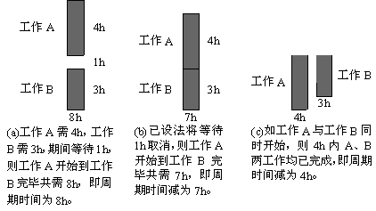

1 . 教学安排
2 . 操作分析的定义与类型
3 . 人机操作分析
4 . 联合操作分析
 联合操作分析的意义与目的
联合操作分析的意义与目的
联合操作分析图的画法
联合操作实例分析
5 . 双手操作分析
6 . 思考与练习题
 返回课程学习首页
返回课程学习首页
联合操作分析的意义与目的
在生产现场中，两个或两个以上操作人员同时对一台设备(或一项工作)进行操作称为联合操作作业。联合操作作业分析常采用“联合操作分析图”，此图是使用普通的时间单位，记录一个以上的工作者、工作物及机器设备的动作，以显示其相互关系的图形。因此，当需要了解某一工作程序内，各个对象的各种不同动作的相互关系时，最好的方法就是画联合操作分析图。
联合操作分析可用于以下的目的：
(1)发掘空闲时间与等待时间。
(2) 平衡多名作业者的工作。
(3)减少周期时间，使机器获得最大利用率。
(4)易发掘最佳的工作方法及选配合适的作业者和机器，使人、机作业达到最佳组合。
利用联合操作分析图对某一工作程序内各个对象的各种不同动作及其相互关系进行分析，通过对各对象的工作合理调配，取消空闲或等待时间，达到缩短周期的目的。
利用联合操作分析图对联合操作进行分析的基本原则是：人与机的动作如能同时完成为最佳，如图6-7所示。

图6-7联合操作进行分析基本原则